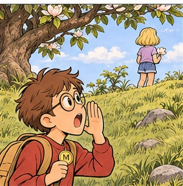
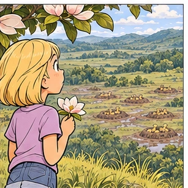
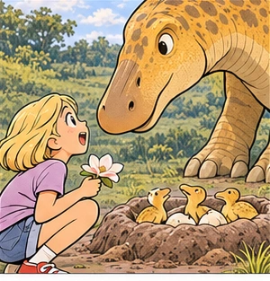
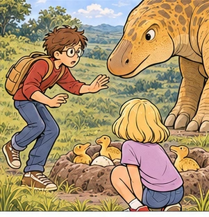

Chapter 6 · Part 1 — Dinosaur Valley
“Annie, look at this!” Jack called. “Look what I found!”

Annie had gone up to the hilltop.
She was busy picking a flower from the magnolia tree.

“Annie, look! A medallion!”

But Annie wasn’t paying attention to Jack. She was staring at something on the other side of the hill.

“Oh, wow!” she said.

“Annie!”
Clutching her magnolia flower, she took off down the hill.

“Annie, come back!” Jack shouted.

But Annie had disappeared.
“I’m going to kill her,” Jack muttered.

He stuffed the gold medallion into his jeans pocket.
Then he heard Annie shriek.

“Annie?”
Jack heard another sound as well. A deep, bellowing sound. Like a tuba.

“Jack! Come here!” Annie called.

“Annie!”
Jack grabbed his backpack and raced up the hill.

When he got to the top, he gasped.
The valley below was filled with nests. Big nests made out of mud. And the nests were filled with tiny dinosaurs!

Annie was crouching next to one of the nests. And standing over her was a gigantic duck-billed dinosaur!

“Don’t panic. Don’t move,” said Jack. He stepped slowly down the hill toward Annie.

The huge dinosaur was towering above Annie. Waving her arms. Making her tuba sound.

Jack stopped. He didn’t want to get too close.
He knelt on the ground. “Okay. Move toward me. Slowly,” he said.
Annie started to stand up.
“Don’t stand. Crawl,” said Jack.
Clutching her flower, Annie crawled toward Jack.
The duck-billed dinosaur followed her. Still bellowing.
Annie froze.
“Keep going,” Jack said softly.
Annie started crawling again.
Jack inched farther down the hill. Until he was just an arm’s distance from Annie.
He reached out—and grabbed her hand.
He pulled Annie toward him.
“Stay down,” he said. He crouched next to her. “Bow your head. Pretend to chew.”
“Chew?”
“Yes. I read that’s what you do if a mean dog comes at you.”
“She’s no dog, Jack,” said Annie.
“Just chew,” said Jack.
Jack and Annie both bowed their heads. And pretended to chew.